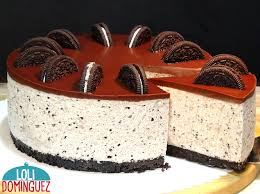

El Cheesecake es de mis postres favoritos, me encanta la combinacion cremosa y crujente por la base, y el
relleno.

Ingredientes
400 mililitros de crema de leche
2 paquetes de queso crema (227 gramos c/u)
150 gramos de azúcar blanca
1 cucharadita de vainilla
1 cucharadita de colapez en polvo (gelatina sin sabor), hidratada en 2 cucharadas de agua y disuelta por
unos segundos en el microondas (se usará la colapez hidratada, disuelta y tibia)
100 gramos de galletas Oreo trituradas
Galletas Oreo trituradas, para decorar
Galletas Mini Oreo, para decorar
Fudge, para servir
Para la base
380 gramos de galletas Oreo
80 gramos de mantequilla derretida
Preparacion
Moler las galletas de la base y mezclarlas con la mantequilla derretida. Colocar esta mezcla en el
molde, que debe estar previamente engrasado con un poco de mantequilla derretida. Distribuir y presionar
con un tenedor la mezcla de galletas para formar la base del cheesecake. Refrigerar.
Colocar la crema de leche en un tazón frío, previamente refrigerado. Batir a medio punto (ojo, no llega
a ser chantilly). Mantener esta crema semibatida en la refrigeradora.
En otro tazón, batir el queso crema. Agregar el azúcar blanca y seguir batiendo. Añadir la vainilla.
Batir para integrar.
A la mezcla anterior agregarle la colapez disuelta y tibia. Batir. Enseguida, incorporar poco a poco la
crema semibatida que estaba en la refrigeradora, mientras se sigue batiendo.
Una vez lista la mezcla, separar una porción en una manga para decorar y añadir (a la mezcla del tazón)
100 gramos de galletas Oreo trituradas. Integrar con movimientos envolventes usando una espátula.
Echar la mezcla en el molde, cubrir con film y llevar a la refrigeradora durante toda la noche.
Refrigerar también la manga.
Al día siguiente, retirar de la refrigeradora, desmoldar y decorar con la manga, galletas Oreo
trituradas y galletas Mini Oreo.
Cortar y ¡servir con fudge!
Esta receta es de la pagina https://buenazo.pe/recetas/dulces-y-postres/cheesecake-oreo-receta-paso-paso-806